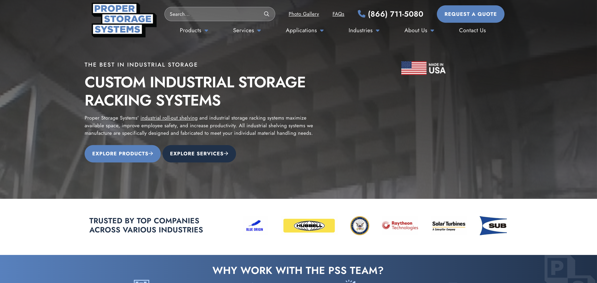
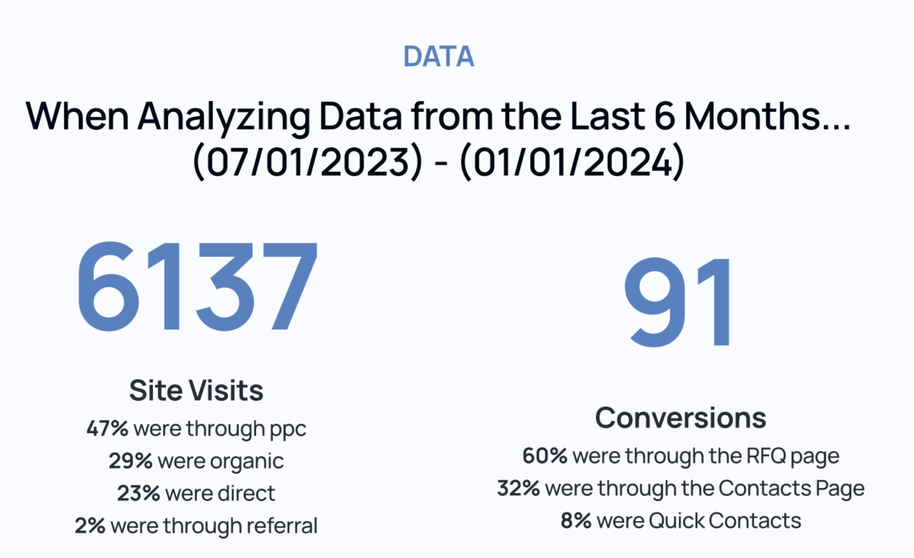
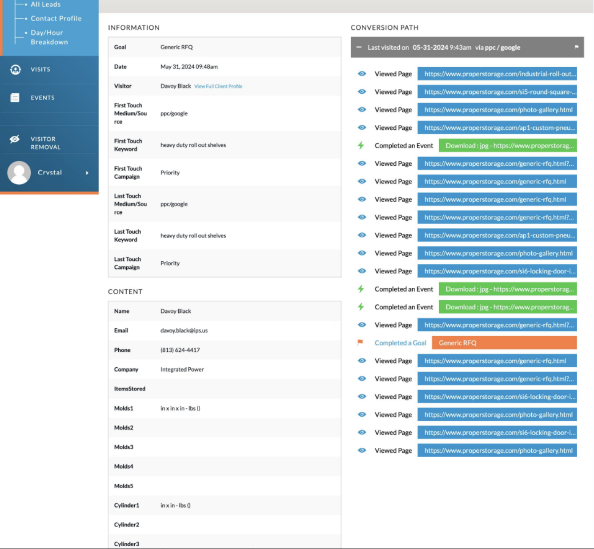
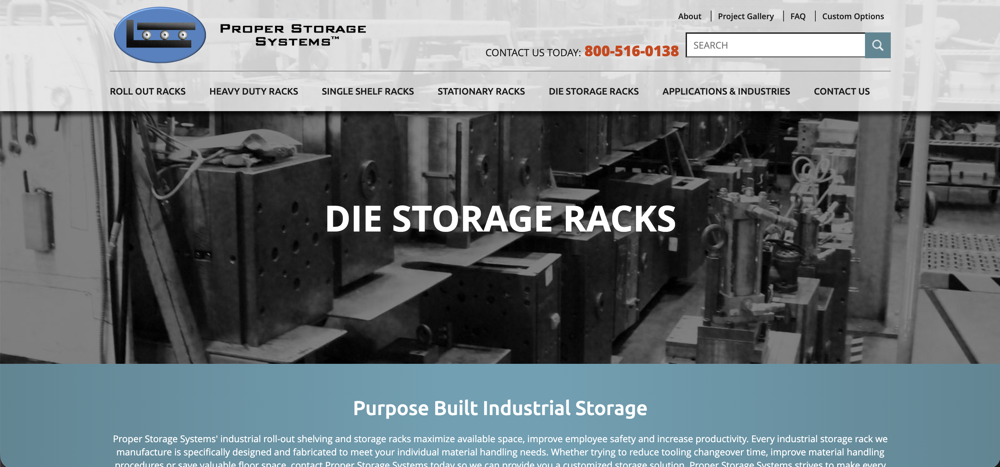
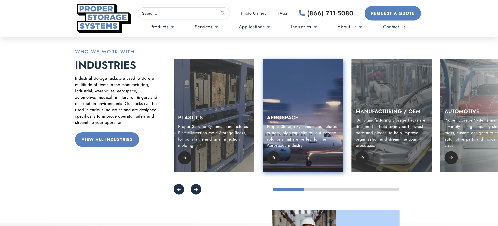

The RFQ form was used most, understood least
60% of conversions happened on the RFQ page, yet users were abandoning mid-form due to unclear instructions around dimensions and item types. Visual aids were missing.
Redesigning an industrial B2B website to be responsive, modern, and conversion-optimized: turning a 7-year-old static site into a lead-generation engine for OEM, aerospace, and automotive buyers.

pss-hp-hero.png
Overview
Proper Storage Systems manufactures heavy-duty industrial storage racks capable of holding up to 12,000 lbs. Their products, roll-out racks, die storage systems, and pneumatic shelving, serve the most demanding environments in aerospace, automotive, and OEM manufacturing.
Despite a robust product line and blue-chip clients like Boeing, 3M, and NASA, their website was a conversion bottleneck: non-responsive, visually dated, and lacking the clarity industrial buyers need to act quickly.
"The current site is not responsive. The new site needs to be much lighter and modern looking. Success, for us, is launching a site that works well on all devices and looks far more modern."
Six-month analytics snapshot before the redesign (Jul 2023 to Jan 2024):
6,137
Site visits47% PPC, 29% organic, 23% direct, 2% referral91
Conversions60% RFQ page, 32% contact page, 8% quick contact1.48%
Conversion rateIndustry benchmark for B2B industrial: 2 to 4%How can UX design increase lead generation for B2B industrial websites?
By clarifying the user journey, surfacing strong calls to action, and simplifying the RFQ process, UX can guide industrial buyers, who are evaluating on tight timelines, toward requesting a quote, submitting a question, or scheduling a consultation.
Research
Three intersecting research methods informed the redesign. The goal: understand not just what users want to see, but what decisions they're making and how fast they need to make them.

pss-analytics.png

pss-conversion.png
Audited six months of site traffic and conversion data to identify where users were dropping off and which pages drove the most leads. The RFQ page was the clear conversion workhorse, but its UX was burying users in complexity.
Analyzed Uline, Shelving Inc, Global Industrial, and Rack Engineering Division, examining navigation structures, product presentation hierarchy, and how each site handled customization complexity for B2B buyers.
One-on-one interviews with internal team members and client stakeholders. Key finding: buyers often arrive with very specific storage problems (die dimensions, load weights) but couldn't find confirmation that PSS could solve them without calling.
60% of conversions happened on the RFQ page, yet users were abandoning mid-form due to unclear instructions around dimensions and item types. Visual aids were missing.
The existing site rendered poorly on any screen smaller than a 1280px desktop. With 38% of B2B buyers now researching on mobile, this was costing leads before they even reached a CTA.
Top-performing competitors used clear product hierarchy, filterable galleries, and prominent trust signals. PSS had the better product, but the site didn't reflect it.
PSS's fully custom approach is a differentiator, but the site made the ordering process feel opaque. Buyers need to quickly understand the process, not be overwhelmed by it.
Process
Solutions
The product detail page
Streamlined user journeys with persistent "Request a Quote" CTAs, a clearly differentiated value proposition ("Why Work With PSS?"), and a feature section designed to address the specific concerns of industrial procurement teams. By targeting the unique needs of OEM, aerospace, and automotive buyers, the new site converts research intent into contact intent.
34% increase in RFQ submissions, six months post-launch
A visual customization flow
The original RFQ form had no visual guidance for users unfamiliar with die or cylinder storage specifications. The redesigned page introduced dimensional diagrams for molds, dies, tooling parts, and cylinders, paired with a structured "item #" entry system that lets users add multiple storage items without friction.
22% drop in form abandonment vs. the prior RFQ page
See exactly what you're buying
Industrial clients need to see exactly what they're buying, at scale. The new gallery filters by shelf type (conveyer roller, manual, pneumatic, transfer ball) and storage item category, giving procurement teams the confidence to move forward without a phone call.
2.4× more gallery sessions vs. the previous static gallery
A mobile-first architecture
The original site was desktop-only, rendering broken layouts on any device below 1280px wide. The redesign was built mobile-up, so every page, from the homepage hero to the RFQ form, works correctly on phones, tablets, and desktops.
51% more mobile sessions engaged, bounce rate down 18% on mobile
Outcomes
Metrics tracked over the six months following launch (Aug 2024 to Feb 2025) against the pre-redesign baseline period.
+34%
−22%
+51%
2.7%

pss-old-ui.png

pss-industries.png
Reflection
The clearest win from this project was proving that UX decisions have measurable downstream impact on B2B revenue. A conversion rate improvement from 1.48% to 2.7%, on a site receiving over 6,000 visits per half-year, is a real number: the kind of outcome that makes the case for design investment to leadership teams in industrial companies that are traditionally skeptical of it.
If I were starting again, I'd push to introduce usability testing in Phase 2, not Phase 4. We made the right calls on the RFQ form and gallery, but those decisions were informed by stakeholder interviews and competitive benchmarking, not direct user observation. Earlier usability testing would have reduced the number of QA-round corrections and created a more defensible rationale for design choices during client reviews.
The other lesson: customization complexity is a UX problem disguised as a product problem. Helping industrial buyers understand what they're ordering, before they pick up the phone, is where design can create the most leverage in a B2B manufacturing context.